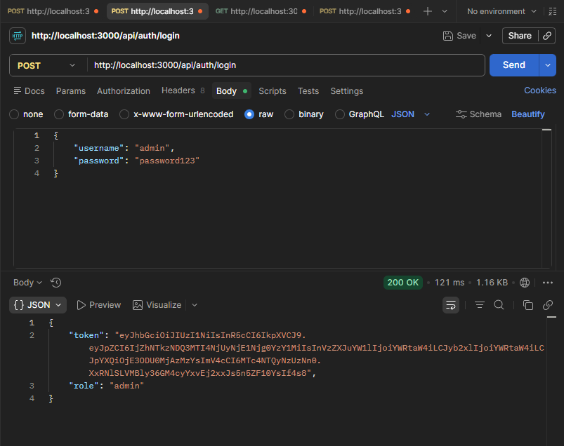
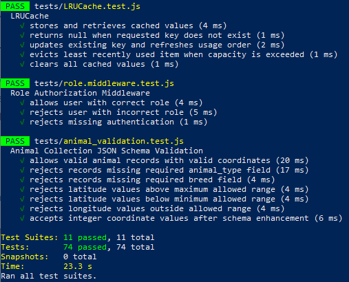
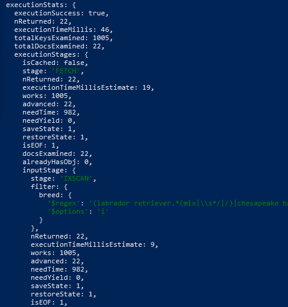
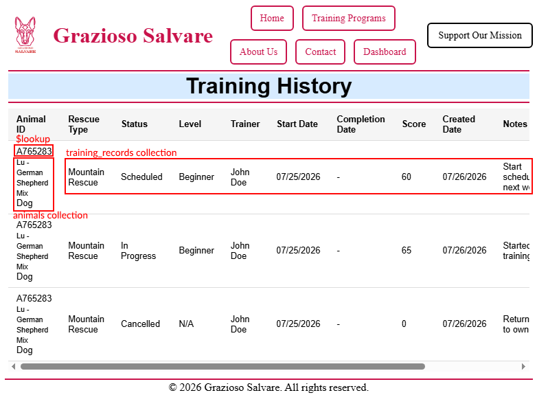
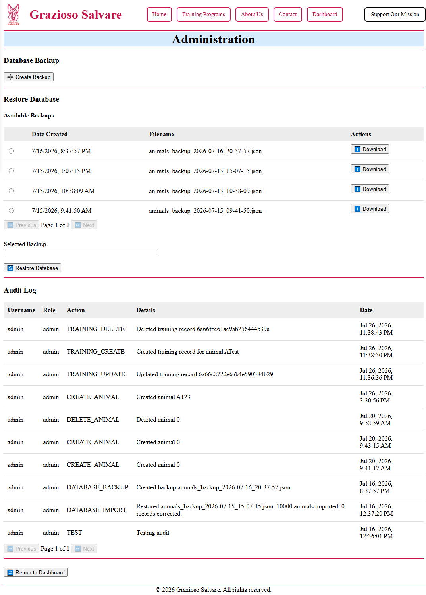

Introduction
Hello everyone!
I am Giuseppe Claudio Zema, a Software Engineering student at Southern New Hampshire University with a background that combines hands-on technical support experience with modern software development practices. Before transitioning into software engineering, I spent more than a decade working as a computer technician, where I developed strong troubleshooting skills, analytical thinking, and the ability to solve technical problems in practical environments. This experience gave me a strong foundation in understanding how technology impacts users and organizations.
Throughout the Computer Science program, I have expanded my technical knowledge from computer support and hardware troubleshooting into software engineering, full-stack development, database design, algorithms, and secure application development. The program has helped me develop a structured approach to solving problems by analyzing requirements, evaluating possible solutions, implementing software using industry practices, and continuously improving applications through testing and feedback.
My goal is to continue growing as a software engineer by combining my previous technical experience with the software development skills I have gained through my education. I am particularly interested in full-stack development and creating reliable, efficient, and maintainable applications that provide practical value to users and organizations.
Professional Growth Through the Computer Science Program
The Computer Science program has significantly expanded my understanding of software development beyond simply writing code. Through courses covering programming, object-oriented design, databases, software testing, cybersecurity, algorithms, graphics, and software engineering practices, I developed the ability to approach software projects from multiple perspectives.
One of the most important lessons from the program has been understanding that successful software development requires more than technical implementation. A complete solution requires analyzing user needs, selecting appropriate technologies, designing maintainable systems, considering security implications, and communicating decisions effectively. The coursework and projects throughout the program have strengthened my ability to evaluate problems and create solutions that balance functionality, performance, usability, and long-term maintainability.
The development of my ePortfolio has allowed me to demonstrate this growth by bringing together several areas of computer science into a single professional project. Instead of focusing only on individual programming assignments, the capstone allowed me to improve an existing application using software engineering principles, algorithm optimization techniques, database improvements, testing practices, and security considerations.
Software Engineering and Development Practices
Throughout the program, I developed an understanding of software engineering practices that support the creation of reliable and maintainable applications. I learned the importance of following a structured development process that includes requirements analysis, system design, implementation, testing, and continuous improvement.
My approach to software development focuses on creating applications that are organized, scalable, and understandable by other developers. I have gained experience with object-oriented programming, full-stack development, REST API design, automated testing, version control, and documentation. These skills allow me to create solutions that are not only functional but also easier to maintain and expand.
During my capstone project, I applied these principles by transforming an earlier application into a modern full-stack solution using the MEAN stack. This process strengthened my understanding of application architecture, frontend and backend communication, API development, authentication workflows, and software quality practices.


Algorithms, Data Structures, and Problem Solving
The Computer Science program strengthened my ability to analyze computational problems and make informed decisions regarding algorithms and data structures. I learned that efficient software requires understanding the relationship between data organization, processing methods, performance requirements, and user expectations.
Through coursework and project development, I gained experience evaluating different approaches and considering trade-offs between simplicity, efficiency, scalability, and resource usage. These concepts were applied during my capstone enhancements by improving how application data was processed and delivered.
The project improvements included implementing database indexing, aggregation pipelines, server-side pagination, and caching strategies to reduce unnecessary processing and improve application responsiveness. These enhancements demonstrate my ability to apply algorithmic concepts to solve real-world software performance challenges.

Database Design and Data Management
Database design has been an important part of my development experience throughout the program. I have gained experience working with relational databases as well as NoSQL database systems and have learned the importance of organizing, validating, and efficiently accessing data.
My coursework and projects helped me understand concepts including database modeling, CRUD operations, data validation, indexing, queries, and performance optimization. I learned that effective database design requires balancing data integrity, application requirements, scalability, and performance.
For my capstone project, I improved the original database implementation by introducing additional validation strategies, optimized queries, indexing, and improved data access patterns. These enhancements demonstrated my ability to design database solutions that support reliable and efficient software applications.

Security Mindset
Security has become an essential consideration throughout my development process. The Computer Science program helped me understand that secure software requires identifying potential vulnerabilities early, validating user input, protecting sensitive information, and designing systems that consider possible threats.
My experience with secure coding practices influenced how I approached application development. I learned the importance of authentication, authorization, data validation, secure communication between application components, and protecting user resources.
In my capstone project, I incorporated security-focused improvements including JWT-based authentication, role-based authorization, audit logs, protected routes, input validation, and improved database practices. These additions strengthened the application by reducing potential vulnerabilities and creating a more secure architecture.

Communication and Collaboration
Effective communication is a critical skill in software engineering because developers must work with different audiences, including other developers, project managers, stakeholders, and end users. Throughout the Computer Science program, I developed the ability to explain technical concepts clearly through documentation, presentations, project narratives, and code reviews.
My previous experience as a computer technician also contributed to my ability to communicate technical information to individuals with different levels of technical knowledge. I learned that successful problem solving requires understanding the needs of the people using the technology and explaining solutions in a way that supports decision making.
The CS-499 capstone strengthened these skills through the creation of technical documentation, enhancement narratives, and a code review presentation. These experiences improved my ability to communicate design decisions, explain technical improvements, and collaborate through feedback.
Capstone Portfolio Overview
Collectively, the artifacts in this portfolio demonstrate achievement of the Computer Science program learning outcomes. They illustrate my ability to design and evaluate computing solutions, apply software engineering principles, communicate technical information effectively to diverse audiences, and make informed decisions that consider security, performance, maintainability, and professional responsibility. These experiences have prepared me to contribute to real-world software development projects while continuing to grow as a software engineer.
The artifacts included in this portfolio demonstrate my growth across three major areas of computer science: software engineering and design, algorithms and data structures, and database development.
The central artifact of my portfolio is the Grazioso Salvare Animal Rescue Dashboard, originally created during CS-340: Client/Server Development. The original project was enhanced into a full-stack MEAN application that demonstrates modern software engineering practices.
The software engineering enhancement focuses on improving application architecture through Angular, TypeScript, Node.js, Express, REST APIs, authentication, authorization, and automated testing.
The algorithms and data structures enhancement focuses on improving application efficiency through optimized data processing, database indexing, aggregation pipelines, pagination, and caching strategies.
The database enhancement focuses on improving data management through validation, optimization, and scalable database practices.
Together, these enhancements demonstrate my ability to design, develop, evaluate, and improve computing solutions while applying industry practices related to software engineering, performance optimization, database management, and security.
This portfolio represents both my technical development and my continued commitment to learning as a software engineer. The skills demonstrated throughout this work provide a foundation for continued growth and contribution within the software development field.
Completing the Computer Science program has provided me with a strong technical foundation and reinforced the importance of continuous learning in software engineering. I am grateful for the knowledge and experience I gained throughout the program, and I look forward to applying these skills in professional software development while continuing to expand my expertise.